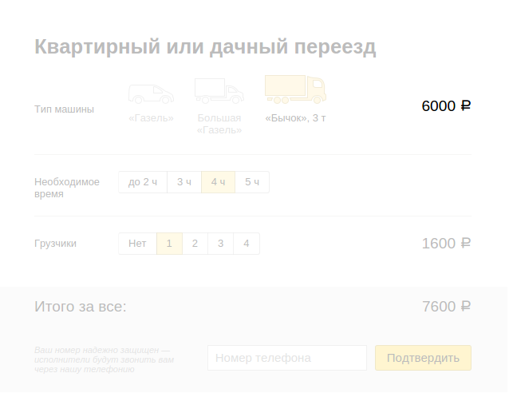

БЭМ + Flux
EkbJS 2. 2015-09-04
БЭМ
Блок — независимый компонент страницы
Элемент — составная часть блока
Элемент — составная часть блока
Элемент — составная часть блока
Модификатор задаёт особые свойства
bh.apply({
block: 'button',
mods: { theme: 'action', size: 'm' },
content: 'Подтвердить'
})
- github.com/bem/bem-tools
- github.com/enb-make/enb
- github.com/floatdrop/gulp-bem
- bem.info/tools/templating-engines/bemxjst
- github.com/bem/bh
- github.com/bem/bem-core
- github.com/bem-node/bem-node
- github.com/baby-loris/baby-bem
i-bem.js
i-bem.js
фреймворк для управления блоками
button.setMod('pressed', 'yes')
button.elem('text')
button.on('change', fn)
button.setText('Нажми меня!')
button.findBlockOutside('form').submit();
form.findBlockInside('button').on('click', cb);
vs
$button.parent('.form').submit();
$form.find('.button').on('click', cb);
button.on('click', function () {
BEM.channel('form').trigger('submit');
})
BEM.channel('form').on('submit', function () {
// реагируем на событие
})
vs
$button.on('click', function () {
$('body').trigger('form.submit');
})
$('body').on('form.submit', function () {
// реагируем на событие
})
Как сделать систему понятной,
не увеличивая связность блоков?
i-bem.js
the good parts
form
form
→ phone
Ограничим видимость
Блок не должен знать о том, что происходит снаружи.
Поток данных
вниз — вызов API блока
form.findBlockInside('phone').setVal('223-322')
вверх — подписка на события
form.findBlockInside('phone').on('change', fn);
form
form
→ summary

form
→ summary
→ phone
form
→ summary
→ phone
→ input
Ограничим полномочия
Не все блоки могут знать о других блоках
form.findBlockInside('summary').calc();
summary.findBlockInside('phone').submit();
phone.findBlockInside('input').setVal('223-322');
form.findBlockInside('summary').calc();
summary.findBlockInside('phone').submit();
phone.findBlockInside('input').setVal('223-322');
form.findBlockInside('summary').calc();
form.findBlockInside('phone').submit();
form.findBlockInside('input').setVal('223-322');
Отделим данные
Данные должны храниться в особых блоках
userStore.register(header);
userStore.register(form);
userStore.set('name', 'Роман Парадеев');
userStore.emitChange();
Ну что там,
когда уже про Flux?
А это он и есть